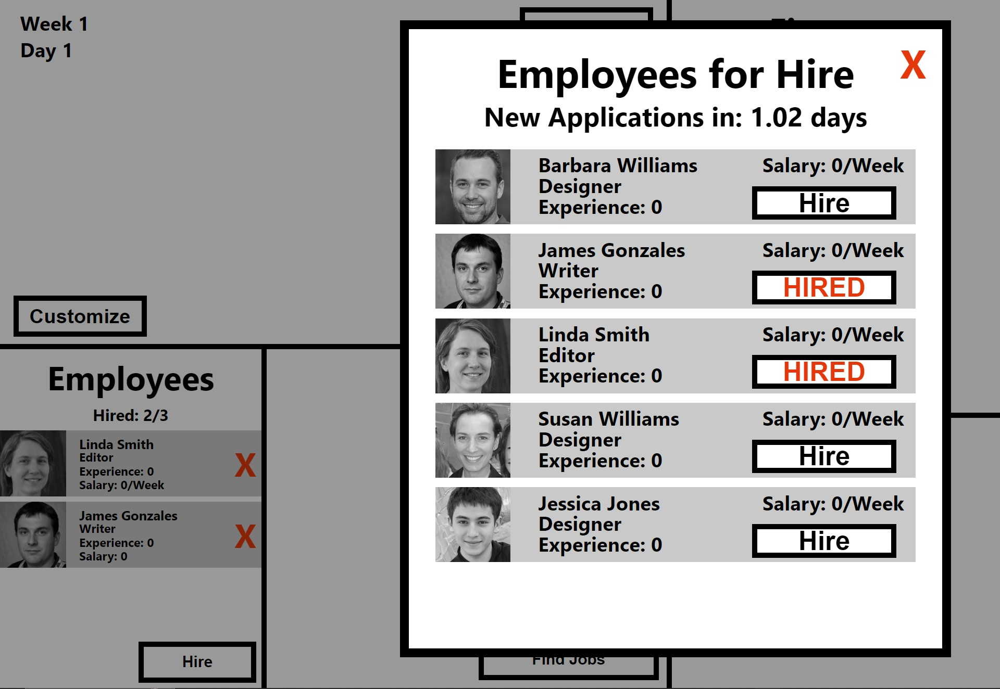
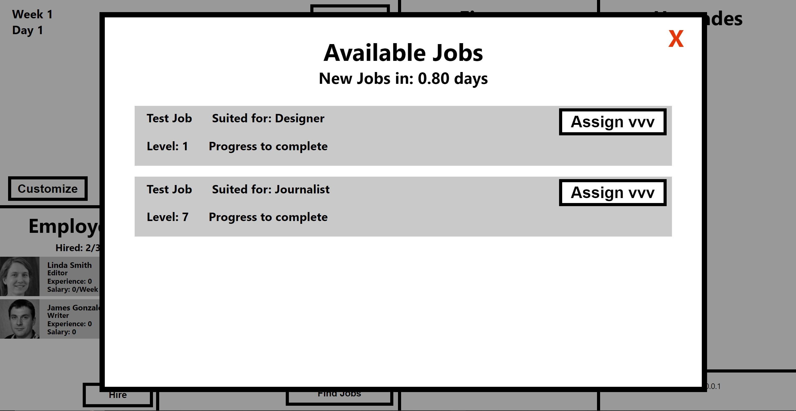
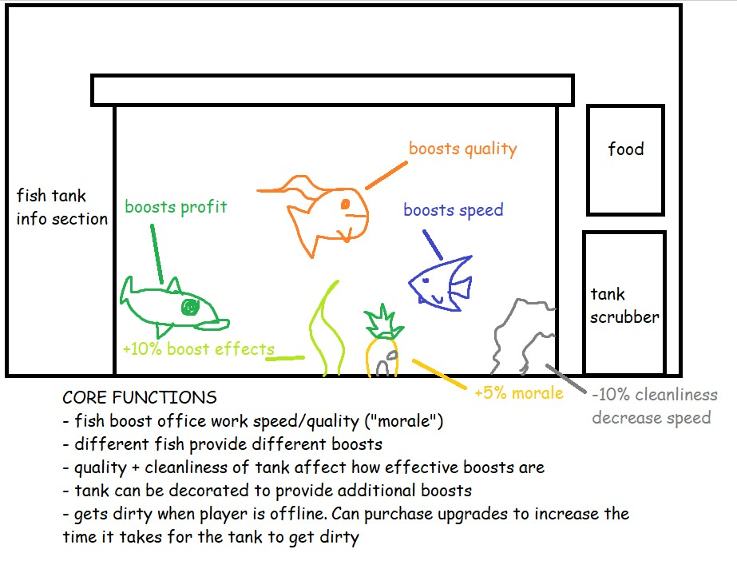

Newspaper Tycoon
<Back to main page>Having exhausted all of my school's selections for advanced computer science classes by my senior year, I enrolled myself in a Javascript web-game programming class in the hopes of taking time to work on new projects that would further my knowledge of web-based development.
Inspired by my recent work at the local East Hampton Star Newspaper, I set out to create a game that emulated the experience of managing a weekly newspaper. Aiming to truly push my technical knowledge with both object oriented programming and web design, I've been putting great care and effort into each and every small detail of the game, hoping to produce a fun and polished result.
Below are some features that I'm currently working on.

A system that procedurally creates hireable employees using AI to generate icons.

A procedural job generation system.

My concept for a fish tank "minigame" that boosts office productivity while also adding some flair and color to the game.
<Back to main page>